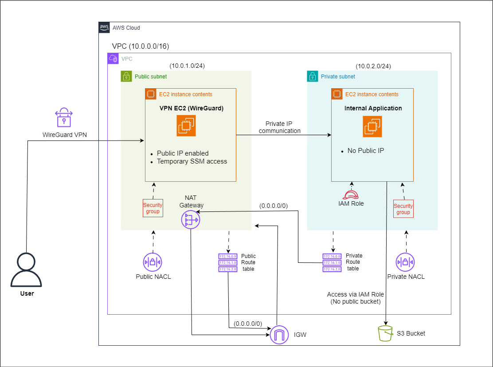

I design secure, scalable and cost-optimized AWS infrastructures using Terraform, Linux and automation best practices.
Cloud & DevOps enthusiast with strong hands-on experience designing production-style AWS infrastructures. Focused on Infrastructure as Code, security-first architecture, networking fundamentals, and automation.
AWS (VPC, EC2, ALB, RDS, S3, IAM)
Terraform (Modules, Remote State)
Linux (User Mgmt, SSH, Permissions)
Docker, GitHub Actions
Git & GitHub
Secure 3-tier architecture using VPC, ALB and RDS.
Modular Terraform provisioning with remote state.
Secure VPC with Bastion & WireGuard VPN.

Email: s.b.tayde777@gmail.com
GitHub: github.com/sagartayde77
LinkedIn: linkedin.com/in/sagartayde777